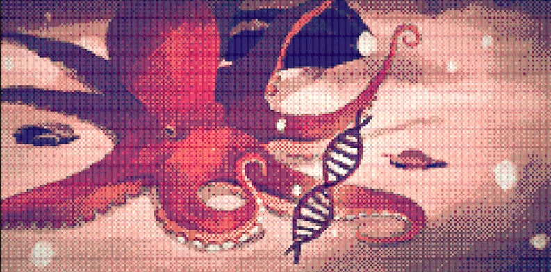
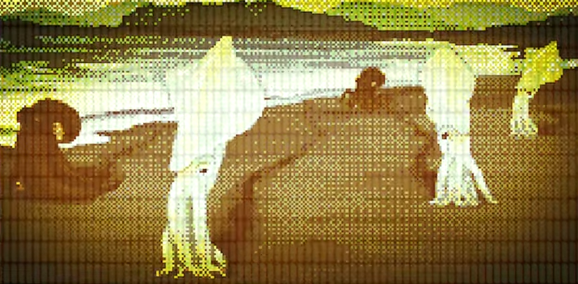

Al derrumbarse los muros de Alterna, gran parte de ellos cayó también en las zonas de mar que había debajo. Grandes cantidades de cristales líquidos se disolvieron en el agua y fueron arrastrados por las corrientes a todos los rincones. Los cristales aún contenían deseos de los humanos. Habiéndolos absorbido y reflejado durante tantos años, les quedó su huella grabada para siempre. Poco a poco, los calamares, pulpos y otras especies marinas que habitaban en gran número las aguas de Alterna fueron absorbiendo los cristales. Y así continuó este proceso hasta que, un buen día, chispazos de… nuevas emociones brotan brotaron de los organismos marinos. SIn poder remediarlo, sintieron impulsos muy similares a aquellos de los humanos que, inconscientemente, anhelaban regresar a la superficie.
Espoleados por este tipo de deseos, los seres marinos experimentaron rápidos y notables cambios evolutivos. Las diversas especies desarrollaron respiración pulmonar y un alto grado de movilidad, adaptándose así poco a poco a permanecer fuera del agua. También su nivel de inteligencia aumentó considerablemente de una generación a la siguiente, y algunas especies incluso adquirieron extraordinarias habilidades para el camuflaje. Al alcanzar un punto crucial en su evolución, los peculiares seres decidieron abandonar el agua todos a una y vivir en tierra firme. Su vida en este entorno hostil fue inicialmente muy dura, pero lograron adaptarse con perseverancia. Hasta que, un día, encontraron los túneles que los humanos habían usado para bajar desde la superficie. La nueva y desenfadada forma de vida tenía ahora vía libre para dejar atrás Alterna y asomar sus ojos al mundo exterior.
